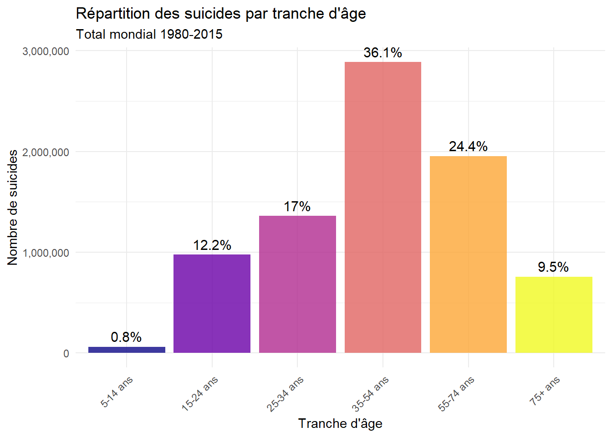
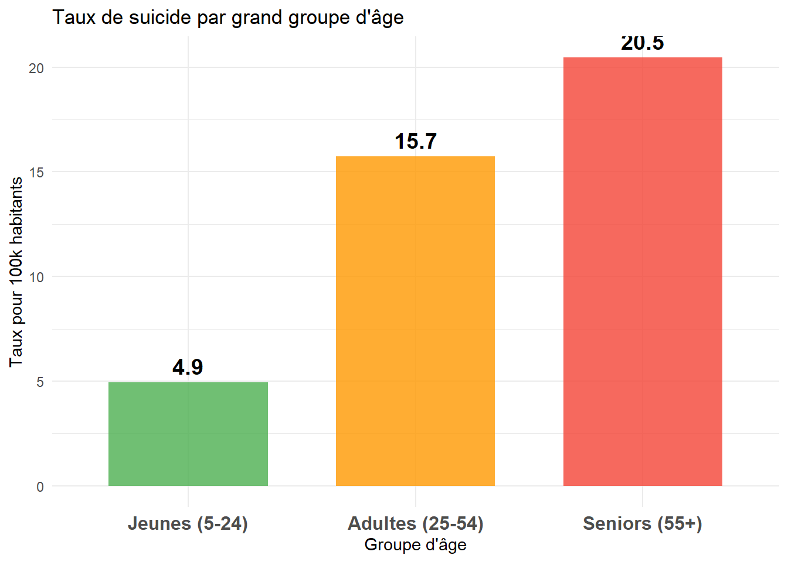
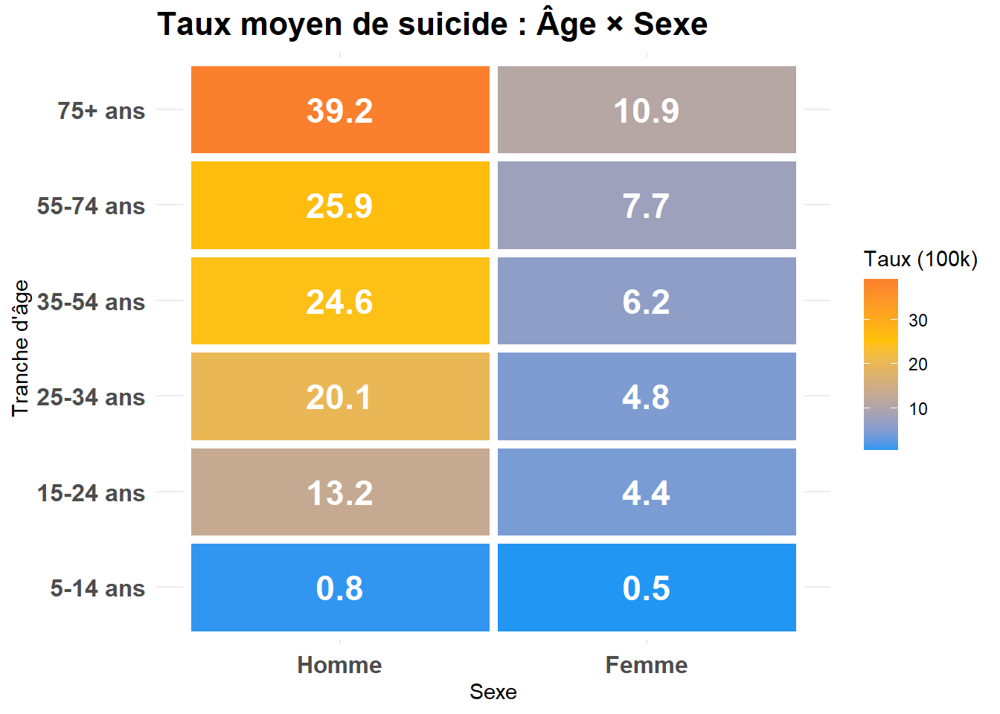
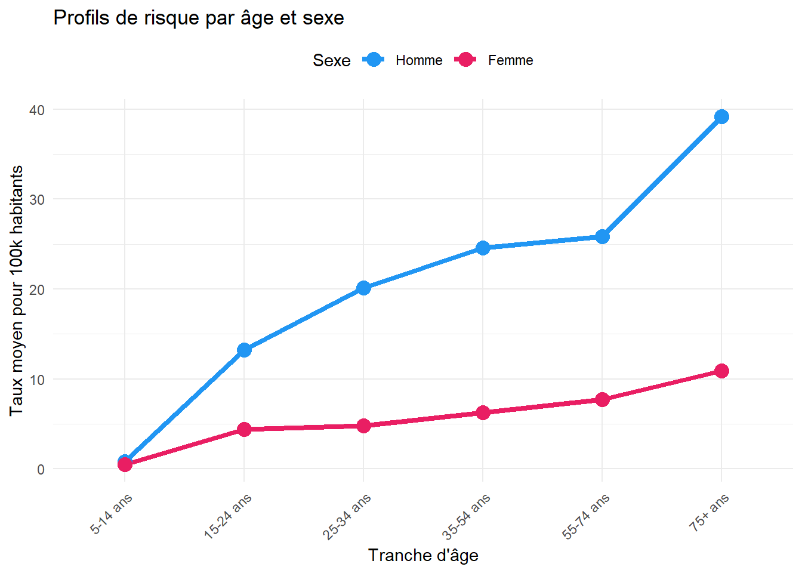
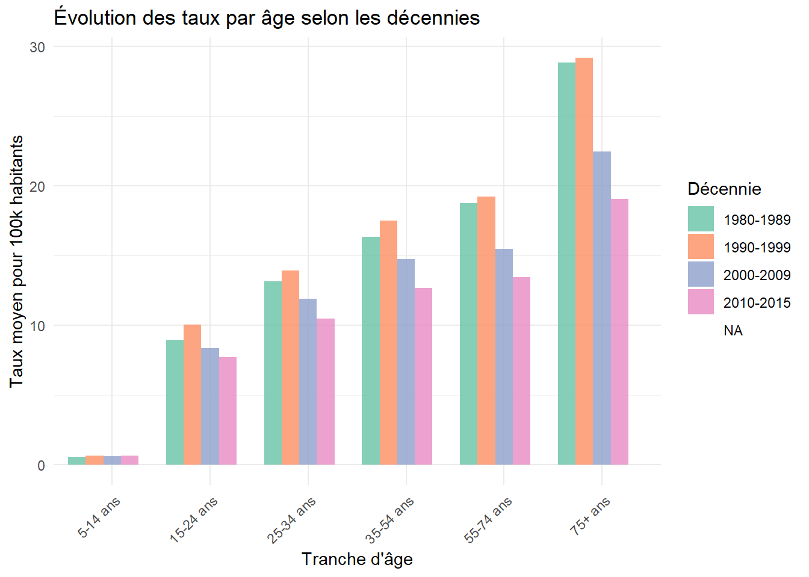
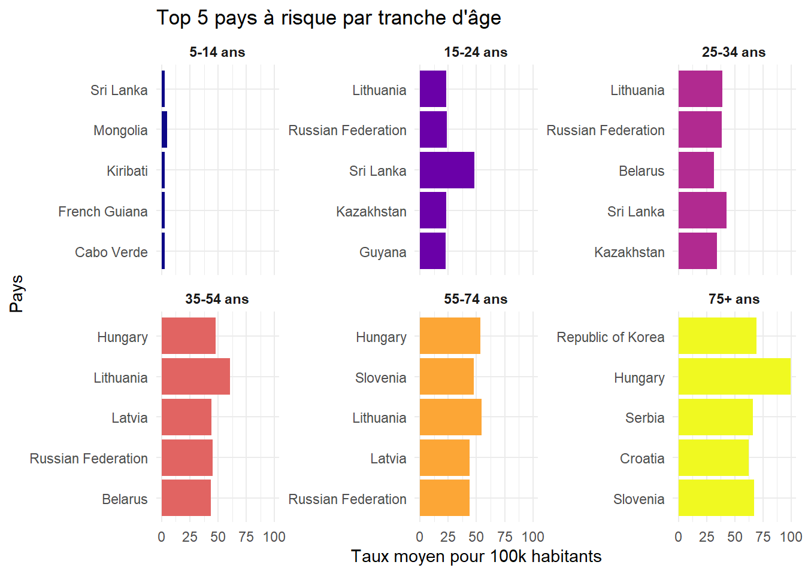

| age | Nombre total | Population | Taux moyen (100k) | Taux médian | Écart-type | Observations |
|---|---|---|---|---|---|---|
| 5-14 ans | 62 320 | 10 451 016 008 | 0.60 | 0.31 | 1.12 | 6 010 |
| 15-24 ans | 975 700 | 10 587 850 825 | 9.22 | 5.63 | 9.71 | 6 010 |
| 25-34 ans | 1 360 780 | 10 180 794 953 | 13.37 | 7.34 | 14.65 | 6 010 |
| 35-54 ans | 2 887 740 | 16 822 867 999 | 17.17 | 9.29 | 18.72 | 6 010 |
| 55-74 ans | 1 955 150 | 10 250 167 417 | 19.07 | 10.92 | 19.17 | 6 010 |
| 75+ ans | 756 777 | 3 009 148 664 | 25.15 | 13.07 | 31.84 | 6 010 |
Chapitre 5 : Analyse par Tranche d’Âge
1 Analyse par Groupes d’Âge
1.1 Vue d’Ensemble par Âge
1.1.1 Statistiques descriptives
Les statistiques sont calculées à partir des données cumulées de tous les pays sur la période 1980–2015. Le nombre total correspond à la somme des suicides par tranche d’âge, et la population à la somme des populations annuelles. Le taux moyen est donc un taux global sur l’ensemble de la période, exprimé pour 100 000 habitants. Les résultats montrent une augmentation nette du taux de suicide avec l’âge : il est très faible chez les 5–14 ans, augmente chez les jeunes adultes, et atteint son niveau le plus élevé chez les personnes âgées, en particulier dans la tranche 75 ans et plus, où la variabilité est également la plus forte.
1.1.2 Répartition des suicides par âge

Ce graphique représente le nombre total de suicides par tranche d’âge sur l’ensemble de la période étudiée. Les pourcentages indiquent la part de chaque tranche d’âge dans le total mondial des suicides, sans tenir compte de la population.
1.2 Profils de Risque par Âge
1.2.1 Taux de suicide par tranche d’âge
1.2.2 Comparaison avec groupe simplifié

1.3 Analyse Croisée Âge × Sexe
1.3.1 Heatmap interactive

1.3.2 Profils par sexe et âge

1.4 Analyse par Décennie et Âge
1.4.1 Évolution des profils d’âge

1.5 Analyse des Extrêmes par Âge
1.5.1 Top 10 observations par tranche d’âge
| age | country | year | sex | taux_suicide_100k |
|---|---|---|---|---|
| 5-14 ans | Rodrigues | 2014 | Femme | 24.51 |
| 5-14 ans | Kiribati | 1996 | Homme | 18.92 |
| 5-14 ans | French Guiana | 2003 | Homme | 18.36 |
| 15-24 ans | Sri Lanka | 1984 | Homme | 92.35 |
| 15-24 ans | Sri Lanka | 1983 | Homme | 90.85 |
| 15-24 ans | Sri Lanka | 1982 | Homme | 86.36 |
| 25-34 ans | Suriname | 1984 | Homme | 157.23 |
| 25-34 ans | Rodrigues | 2016 | Homme | 107.10 |
| 25-34 ans | Russian Federation | 1994 | Homme | 94.18 |
| 35-54 ans | Lithuania | 1994 | Homme | 151.74 |
| 35-54 ans | Lithuania | 1996 | Homme | 151.33 |
| 35-54 ans | Lithuania | 1995 | Homme | 144.85 |
| 55-74 ans | Lithuania | 1998 | Homme | 123.83 |
| 55-74 ans | Lithuania | 1996 | Homme | 121.81 |
| 55-74 ans | Lithuania | 1994 | Homme | 120.56 |
| 75+ ans | San Marino | 1997 | Homme | 300.75 |
| 75+ ans | French Guiana | 1979 | Homme | 250.00 |
| 75+ ans | Aruba | 1995 | Homme | 224.97 |
1.5.2 Pays à risque par tranche d’âge

1.6 Conclusions de l’Analyse par Âge
Points clés identifiés :
Groupe le plus à risque : 75+ ans (taux : 25.15 pour 100k)
Groupe le moins à risque : 5-14 ans (taux : 0.6 pour 100k)
Gradient d’âge : Le risque augmente progressivement avec l’âge, atteignant son maximum chez les seniors
Seniors (55+ ans) : Représentent le groupe le plus vulnérable avec des taux significativement supérieurs
Jeunes (5-14 ans) : Taux les plus faibles, mais toute occurrence reste préoccupante
Différences H/F : L’écart entre hommes et femmes s’accentue avec l’âge
Interprétation : L’âge est un facteur de risque majeur et croissant. Les politiques de prévention doivent être adaptées à chaque groupe d’âge, avec une attention particulière aux seniors qui cumulent vulnérabilités biologiques, sociales et psychologiques.